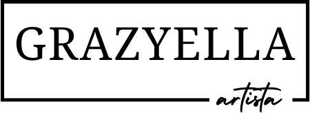

Graziella Di Grezia
Poetessa, pianista, ideatrice del Mail Poetry Project®
mailpoetryproject@gmail.com · Facebook · Instagram @dr.grazyella
CURRICULUM ARTISTICO E DI TERZA MISSIONE
Sintesi del profilo
Titoli e formazione artistica
2025Laurea di II livello in Musica d'insieme ("Ensemble Music"), Conservatorio Statale di Musica "D. Cimarosa", Avellino, 110/110 (30/10/2025)
2004Diploma in Pianoforte principale, Conservatorio "D. Cimarosa", Avellino, 10/10 e lode
2001Maturità classica, Liceo Classico Statale "P. Colletta", Avellino, 100/100
Mail Poetry Project®: call internazionali e mostre
Ideato nel 2023, marchio d'impresa registrato nel 2024: uno spin-off dell'arte postale che unisce in una sola cartolina arte visiva e poesia. Ogni edizione si apre con una call internazionale bilingue (italiano e inglese), aperta a tutti, senza quota di iscrizione e senza giuria; tutte le opere ricevute vengono esposte e documentate.
Nov. 2026Ideazione e cura della IV edizione di "Stop Violence on Women", mostra internazionale di arte postale e poesia per il 25 novembre (87 artisti da 16 Paesi; ingresso libero): Avellino, Università Irpina del Tempo Libero (23-25/11/2026, con presentazione e reading poetico il 25/11); Stradella (PV), Sala della Cultura "Ugo Magnani" (25-29/11/2026), con il Comune di Stradella e l'ANPI; mostra digitale permanente. Con il patrocinio dell'Università degli Studi Link, in collaborazione con il Museo Storico della Comunicazione, con il patrocinio del Tavolo dei "Postali" e con l'Università Irpina del Tempo Libero · Il Postalista, mostra di Stradella · Salernonews24
Giu. 2026III edizione "Stop Violence on Women", terza tappa: Circolo della Stampa, Avellino (12/06/2026), nella rassegna "Poesia è… Rinascenza"
2026"TAILOR-MED – Mail Poetry Project® 2026", progetto di terza missione della Link Campus University con la Çankırı Karatekin University (Turchia, Doç. Arzu Evecen); co-curatela; mostra internazionale online di 153 opere da 8 Paesi (01/03-30/07/2026) · Karatekin University · catalogo PDF
Nov. 2025III edizione "Stop Violence on Women": Prato, Museo Casa Francesco Datini, con l'Istituto Storico Postale "Aldo Cecchi" (22-30/11/2025), poi Avellino, CoFren (25/11/2025) · La Nazione · Il Postalista · Salernonews24, Prato · Salernonews24, Avellino
Ott. 2025Mostra internazionale sulla prevenzione senologica "Veni Vidi Vici", Congresso Nazionale della Sezione di Senologia della SIRM, Bari, 23-25/10/2025 · Vaccarinews
Mar. 2025Mostra internazionale "Women's day" per l'8 marzo, Napoli, con il Tavolo dei Postali e Poste Italiane (annullo filatelico dedicato a Matilde Serao), Sala Matilde Serao del Palazzo delle Poste, Piazza Matteotti (8-14/03/2025) · Corriere dell'Irpinia · ANSA · la Repubblica Napoli · Il Mattino · TG Poste
Gen. 2025II edizione "Stop Violence on Women": oltre duecento cartoline poetiche al Circolo della Stampa, Avellino (24-31/01/2025), preceduta dalla mostra digitale e da un incontro online con il Museo Storico della Comunicazione (25/11/2024); partecipazione di scuole di Avellino, Mercato San Severino e Montoro. Patrocinio del Museo Storico della Comunicazione di Roma, dell'USFI e del Tavolo dei Postali · Giornale L'Irpinia · Corriere dell'Irpinia · incontro online, Corriere dell'Irpinia
Nov. 2023I edizione "Stop Violence on Women", mostra digitale (18-25/11/2023, sulle pagine di Grazyella e del Museo Storico della Comunicazione), con inaugurazione al Pianoterraduo di Avellino il 24/11/2023, collegata via Zoom · call, CampaniaLife · NoiDonne · USFI
Ott. 2023Presentazione del progetto "Cartoline poetiche postali" per la Giornata mondiale della posta, Tavolo dei Postali, Palermo (09/10/2023) · intervista, Salernonews24
Apr. 2023"Mail Poetry Exhibition", prima mostra internazionale di poesia su cartolina, a tema libero, Ex Carcere Borbonico, Avellino (15-22/04/2023): circa 400 cartoline da 20 Paesi · Giornale L'Irpinia · Irpinia TV · Mail Your Art
Mostre digitali
- Stop Violence on Women 2026 · Stop Violence on Women 2025 · Prevenzione senologica, Bari 2025 · Women's day, Napoli 2025
- Stop Violence on Women 2024 (e seconda galleria) · Stop Violence on Women 2023
Pubblicazioni poetiche
2023L'attesa. Scuderi. Presentazioni al Museo Archeologico di Carife e della Baronia (23/07/2023, con intermezzi al pianoforte) e al Mondadori Bookstore di Nocera Inferiore (13/11/2023) · Sistema Irpinia, Carife
2022Quaranta. Graus Edizioni. ISBN 978-88-8346-838-4. Quaranta liriche brevi · scheda editore
2020Versi immersi. Graus Edizioni. ISBN 978-88-8346-751-6 · scheda editore
2017Quest'anno non vado al mare
2016Viva
2015Crisalide. Monologhi di una gravidanza. Presentazione al Circolo della Stampa di Avellino (30/05/2015), con letture accompagnate al pianoforte dall'autrice · Irpinianews
2000Anima. Guida editore
Antologie
2021Antologia Poetica follia, Il Terebinto Edizioni (autrice antologizzata) · elenco autori
2020Irpini per sempre. Viaggio emozionale nel cuore dell'Irpinia, a cura di Rossella Luongo. Edizioni della Sera, collana Antologica. ISBN 978-88-3221-323-2 · scheda editore
2010La polvere e la luna. I poeti del 23 novembre, antologia di poeti irpini a cura di Paolo Saggese. Delta 3 Edizioni · Comunità Provvisoria
Attività musicale
Pianista classica, si dedica alla musica da camera, al pianoforte a quattro mani e alla contaminazione tra arti visive, parola e suono, con eventi in cui la musica dal vivo accompagna l'esposizione delle cartoline poetiche.
Graziella & sons
Dal 2024, formazione musicale con i tre figli: Lycio (pianoforte), Annarita (violino) e Gabriele (chitarra), che si esibiscono da solisti e in Trio GAL negli eventi di poesia e musica e nelle mostre del Mail Poetry Project®.
Set. 2026"Gli alberi poetici", Associazione Terra Terra, Avellino (04/09/2026): pianoforte, violino e chitarra solisti
Lug. 2026"Un pezzo a testa", Lupus in Fabula 2.0 e Alliance Française, Avellino (13/07/2026): pianoforte, violino e chitarra solisti
Giu. 2026"Poesia è… Rinascenza" e III edizione di "Stop Violence on Women", Circolo della Stampa, Avellino (12/06/2026): solisti e Trio GAL
Nov. 2025Inaugurazione della III edizione di "Stop Violence on Women", CoFren, Avellino (25/11/2025): violino e chitarra solisti
Lug. 2025"Una poesia Terra Terra", III edizione, Avellino (25/07/2025): violino e chitarra solisti
Mag. 2025"Poesia è… Rinascenza", Circolo della Stampa, Avellino (09/05/2025): pianoforte e violino solisti
Gen. 2025"Poesia è… Rinascenza", Pollena Trocchia (10/01/2025): violino solista
Concerti ed eventi musicali
Lug. 2026"Un pezzo a testa", incontro musicale non competitivo ideato con Francesca Bonazzoli, Lupus in Fabula 2.0 e Alliance Française, Piazza XXIII Novembre, Avellino (13/07/2026)
Dic. 2025Duo Arion–Di Grezia, A Christmas Festival per pianoforte a quattro mani (video)
Dic. 2024"Cartoline musicali": cartoline poetiche con letture e musica dal vivo, Caffè Hope, Avellino (17/12/2024) · Sistema Irpinia · Salernonews24
Dic. 2024Concerto di Natale per pianoforte a quattro mani, Università Irpina del Tempo Libero, Avellino (06/12/2024)
Nov. 2023Duo Fusco–Di Grezia (violoncello e pianoforte), presentazione de L'attesa, Mondadori Bookstore, Nocera Inferiore (13/11/2023)
Lug. 2023Presentazione de L'attesa con intermezzi al pianoforte, Museo Archeologico di Carife (23/07/2023)
2021"Eroina, eroine", spettacolo di musica e parola del duo Pianoterraduo, ideazione e pianoforte, con Susanna Puopolo (voce recitante): Capri (luglio 2021); "Incontri d'estate alla Terrazza Marzani", San Giorgio del Sannio (BN) (06/08/2021); Carife (agosto 2021) · Orticalab
Mostre personali
Set. 2026"Gli alberi poetici", esposizione del Mail Poetry Project con reading poetico, Terra Terra, Avellino (04/09/2026), con Lupus in Fabula, Alliance Française Avellino e Circolo Letterario Anastasiano
Giu. 2026"Gli alberi poetici – Estate in Fabula", mostra personale a cielo aperto di cartoline poetiche con laboratorio aperto al pubblico, Alliance Française, Avellino (19/06/2026)
Gen. 2026Esposizione della serie personale di cartoline poetiche a "Una poesia a Miramare", Cetara (02/01/2026)
Nov. 2025Partecipazione alla mostra collettiva di arte contemporanea "Fili di Sortilegio", ex Carcere Borbonico, Montefusco (AV)
Apr. 2024Mostra personale "Cartoline Poetiche Postali" (produzione 2022-2024), Circolo della Stampa, Avellino, 5-21/04/2024, con tavola rotonda sulla cartolina e laboratorio per bambini · Sistema Irpinia · Anteprima24 · Giornale L'Irpinia
Apr. 2023Mostra personale "Cartoline poetiche irpine", Chiostro di Santo Spirito e Sala Consiliare, Castel Baronia (1-8/04/2023) · Sistema Irpinia · Corriere dell'Irpinia
Mar. 2022"Quaranta", mostra personale di cartoline poetiche per i quarant'anni dell'autrice, Sala Espositiva dell'Ex Carcere Borbonico, Avellino (19-25/03/2022), a cura di Claudia Mercaldo e Gemma Savelli · Castelli d'Irpinia
Ott. 2021"Mostra di poesie" da Versi immersi, prima presentazione ufficiale del libro, Università Irpina del Tempo Libero, Avellino (9-10/10/2021), con Pianoterraduo e il flautista Filippo Staiano · Irpinia TV · Agendaonline
2022-23Serie personali di cartoline poetiche sui luoghi dell'Irpinia e del Sud (serie estive 2022 e 2023)
Rassegne e incontri di poesia
Dal 2024Responsabile regionale per la Campania di Rinascimento Poetico: incontri di letture poetiche ad Avellino (Università Irpina del Tempo Libero, Salone Pianoterraduo, Gamea), tra cui "Silenzio, poesia!" (19/10/2024) e "Poesie a colazione" (14/09 e 30/11/2024); riapertura del Salone Pianoterraduo con "Letture poetiche", condotte con Giuseppe Vetromile (06/09/2024) · Corriere dell'Irpinia
2025-26"Una poesia a Miramare", Cetara (SA): ideazione e conduzione con Giuseppe Vetromile, I edizione 12/08/2025, II edizione 02/01/2026
2024-25"Una poesia Terra Terra", incontro di poesia e musica con letture e interventi musicali, Terra Terra, Avellino, con il Circolo Letterario Anastasiano: II edizione 02/08/2024; III edizione 25/07/2025 · La Voce del Meridione, 2024
2025-26"Poesia è… Rinascenza", rassegna itinerante di Melania Mollo e Giuseppe Vetromile: Pollena (10/01/2025); incontri del Mail Poetry Project al Circolo della Stampa di Avellino (09/05/2025, anche al pianoforte; 12/06/2026) · La Provincia online · Sistema Irpinia
Feb. 2025Presentazione de L'attesa a "Riscontri d'Autore #12" (Terebinto Edizioni e APS Riscontri), Caffè Hope, Avellino (19/02/2025) · BiNews · Cronache della Campania
Arte, medicina e terza missione universitaria
- Referente per la Terza Missione del CdL in Tecniche di Radiologia Medica per Immagini e Radioterapia, Link Campus University, dal giugno 2025
- Co-curatrice del progetto TAILOR-MED con la Link Campus University e la Çankırı Karatekin University (2026)
- Ideatrice della mostra sulla prevenzione senologica al Congresso Nazionale della Sezione di Senologia SIRM (Bari, 23-25/10/2025)
- Di Grezia G. Radiologists and music: supporting dual careers in medicine and the arts. i3 Journal, European Society of Radiology, gennaio 2026 · articolo
- Di Grezia G. Beyond the clinic: artistic practice as a sustainable lifestyle model for physicians. Veredas do Direito. 2026;23(3). doi:10.18623/rvd.v23.n3.4571
- Coordinatrice scientifica del webinar interdisciplinare "Kalórexia: la percezione del corpo tra cultura digitale, estetica e radiologia", gennaio 2026 · registrazione
- Laboratori nelle scuole: "Libriamoci", Scuola Primaria di Cesinali, "Big and small: una fiaba suonata" (17/11/2023); laboratorio poetico con Rinascimento Poetico (22/03/2024); Musi'Kids per Lupus in Fabula, Spazio Laika (28/09/2024); "Irpinia Poetica", Libreria L'Angolo delle Storie, Avellino (30/05/2025)
Giurie, associazioni e giornalismo
- Giurata di premi di poesia: "L'inedito"; premio dell'Istituto Comprensivo di Monteforte Irpino; premio di Tiziana Guidi; premio "Voci nuove" di Montefredane; "Il verso giusto", poesia dialettale, Santo Stefano del Sole (2024)
- Docente e componente del consiglio direttivo dell'Università Irpina del Tempo Libero, Avellino, dal 2000
- Socia fondatrice e componente del consiglio direttivo di Lupus in Fabula 2.0 (presidente Roberta De Falco), associazione per attività educative e artistiche rivolte soprattutto ai bambini, dal 2025
- Fondatrice dell'APS Associazione Pabulum per la promozione del benessere e della salute (2016)
- Presidente, International Association Advancement in Health (IAAH), dal 2026
- Giornalista pubblicista, Ordine dei Giornalisti della Campania, n. 185299 (dal febbraio 2024); su Salernonews24 scrive dal 2023 e cura la rubrica settimanale "Il Venerdì Ri…leggiamo Poesia" e le recensioni "Ex libris" · pagina autrice
Rassegna stampa (selezione)
I singoli articoli sono collegati alle voci corrispondenti. Altre testate: Vaccarinews, Cartoline poetiche ad Avellino · Vaccarinews, Donne e violenza · rassegna stampa USFI.